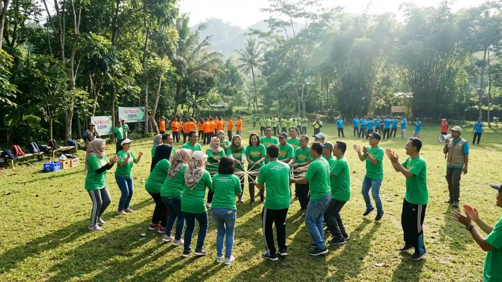

Biaya outbound Kediri Pare dipengaruhi jumlah peserta, durasi, fasilitas, konsumsi, fasilitator, dan musim kunjungan, sehingga harga paket dapat bervariasi antarpenyedia dan antarwaktu.
- Tidak ada harga tunggal untuk outbound di Pare, karena setiap paket disusun sesuai kebutuhan kelompok.
- Komponen utama biaya mencakup fasilitator, peralatan, konsumsi, dokumentasi, asuransi, dan transportasi lokal.
- Masa libur dan akhir tahun cenderung ramai, sehingga ketersediaan dan harga dapat berubah.
- Wisata Ubalan di Kediri tercatat dikunjungi sekitar 10.000 orang dalam dua hari pertama setelah dibuka kembali pada 31 Desember 2025.
- Anggaran hemat tidak berarti mengurangi standar keselamatan.
DAFTAR ISI
- 1. Apa Saja Komponen Biaya Outbound di Kediri Pare?
- 2. Mengapa Harga Paket Outbound Bisa Berbeda?
- 3. Bagaimana Musim Liburan Memengaruhi Biaya dan Ketersediaan?
- 4. Apakah Outbound Murah Selalu Berarti Kurang Aman?
- 5. Bagaimana Cara Menyusun Anggaran Outbound yang Realistis?
- 6. Bagaimana Cara Menghemat Biaya Tanpa Mengurangi Kualitas?
- 7. Bagaimana Biaya Outbound Berkaitan dengan Panduan Lengkap Outbound di Pare?
- 8. Kesimpulan
- 9. FAQ
Apa Saja Komponen Biaya Outbound di Kediri Pare?
Komponen biaya outbound di Kediri Pare umumnya meliputi honor fasilitator, peralatan permainan, konsumsi, dokumentasi, asuransi peserta, penggunaan area, dan bila diperlukan penginapan serta transportasi.
Honor fasilitator mencakup pemandu utama dan asisten lapangan. Semakin banyak peserta, semakin banyak asisten yang dibutuhkan untuk menjaga keselamatan.
Peralatan permainan meliputi tali, bola, kartu, rintangan, dan perlengkapan keselamatan seperti helm atau tali pengaman bila aktivitas memerlukannya.
Konsumsi biasanya terdiri dari air minum, makanan ringan, dan makan siang. Dokumentasi berupa foto atau video dapat masuk paket atau dihitung terpisah.
Asuransi peserta sering menjadi komponen yang terlewat, padahal fungsinya penting bila terjadi cedera.
Untuk kelompok dari luar kota, biaya transportasi dan penginapan perlu dihitung. Kawasan Pare menyediakan berbagai pilihan penginapan karena banyak peserta kursus datang dari berbagai daerah, sehingga pilihan dapat disesuaikan dengan anggaran.
Mengapa Harga Paket Outbound Bisa Berbeda?
Harga paket outbound berbeda karena rancangan kegiatan, tingkat tantangan, rasio fasilitator terhadap peserta, kualitas peralatan, lokasi, dan komponen layanan yang termasuk dalam paket tidak sama.
Paket sederhana dengan permainan kelompok di lapangan terbuka tentu berbeda dari paket yang memakai rintangan tinggi atau lintasan khusus. Rasio fasilitator juga berpengaruh.
Penyedia yang menugaskan satu pendamping untuk kelompok kecil memerlukan biaya lebih besar daripada penyedia yang satu pendampingnya menangani kelompok besar, tetapi pengawasan menjadi lebih baik.
Kualitas peralatan memengaruhi harga. Peralatan keselamatan yang terawat memerlukan biaya perawatan dan penggantian berkala.
Harga yang jauh lebih rendah dari penyedia lain perlu ditanyakan alasannya, terutama bila menyangkut peralatan dan asuransi.
Selain itu, ada penyedia yang menggabungkan outbound dengan layanan lain, misalnya penginapan atau kunjungan wisata.
Paket gabungan sulit dibandingkan langsung, sehingga setiap komponen perlu diuraikan agar perbandingannya adil.

Jumlah peserta dan rasio pendamping fasilitator menjadi salah satu faktor utama yang menentukan biaya outbound. (Ilustrasi)Bagaimana Musim Liburan Memengaruhi Biaya dan Ketersediaan?
Musim liburan memengaruhi ketersediaan jadwal dan dapat memengaruhi harga, karena permintaan rombongan meningkat pada libur sekolah, akhir tahun, dan hari besar nasional di kawasan Kediri.
Minat wisata di Kabupaten Kediri terlihat tinggi pada awal 2026. Menurut beritajatim.com yang terbit pada 7 Januari 2026, Wisata Ubalan di Kecamatan Plosoklaten menerima sekitar 10.000 pengunjung dalam dua hari pertama setelah dibuka kembali pada 31 Desember 2025.
Lonjakan seperti ini menunjukkan bahwa periode akhir tahun ramai di kawasan Kediri, sehingga rombongan perlu memesan lebih awal.
Peserta kursus dan pelajar juga banyak berkunjung ke Pare pada masa libur. Pemesanan di luar puncak liburan sering membuka lebih banyak pilihan jadwal.
Namun, penyedia berbeda memiliki kebijakan sendiri, sehingga pembaca perlu menanyakan langsung apakah ada perbedaan tarif antara hari kerja dan akhir pekan.
Apakah Outbound Murah Selalu Berarti Kurang Aman?
Outbound murah tidak selalu kurang aman, tetapi harga rendah perlu diperiksa dengan menanyakan fasilitator, peralatan, asuransi, dan prosedur darurat yang tersedia dalam paket.
Paket dengan permainan sederhana di lapangan memang dapat lebih terjangkau tanpa mengurangi keselamatan.
Risiko muncul ketika harga rendah dicapai dengan menghilangkan komponen penting, seperti pendamping yang memadai atau perlengkapan pengaman.
Pertanyaan yang layak diajukan kepada penyedia adalah siapa yang mendampingi peserta, apa yang dilakukan bila peserta cedera, dan apakah ada asuransi.
Jawaban yang jelas dan tertulis menandakan penyedia yang terbuka. Panduan lebih lengkap tentang penilaian penyedia tersedia di artikel cara memilih penyedia outbound di Kediri Pare.
Bagaimana Cara Menyusun Anggaran Outbound yang Realistis?
Anggaran outbound yang realistis disusun dengan menetapkan tujuan, menghitung jumlah peserta, meminta rincian tertulis dari beberapa penyedia, menyisihkan dana cadangan, dan membandingkan komponen yang sama.
Mulailah dengan menentukan tujuan dan durasi. Hitung jumlah peserta beserta pendamping dari sekolah atau perusahaan.
Minta penawaran tertulis dari sedikitnya dua atau tiga penyedia dengan format yang sama agar komponen dapat dibandingkan satu per satu.
Sisihkan dana cadangan untuk kebutuhan tak terduga, seperti perubahan jumlah peserta atau kebutuhan tenda saat hujan.
Dana cadangan yang umum dipakai kelompok berada pada kisaran sebagian kecil dari total anggaran, tetapi besarnya perlu disesuaikan dengan kebijakan masing-masing lembaga.
Cek juga syarat pembayaran, kebijakan pembatalan, dan jadwal pengganti bila cuaca buruk. Hal-hal ini sering menentukan apakah anggaran tetap terjaga saat rencana berubah.
Bagaimana Cara Menghemat Biaya Tanpa Mengurangi Kualitas?
Biaya outbound dapat dihemat dengan memilih hari non-puncak, menyederhanakan permainan, membawa konsumsi sendiri bila memungkinkan, dan mengatur jumlah peserta, tanpa mengurangi pendampingan dan perlengkapan keselamatan.
Hari kerja sering lebih fleksibel dibanding akhir pekan. Permainan yang bertumpu pada kreativitas, seperti tantangan komunikasi dan penyelesaian teka-teki kelompok, memerlukan peralatan lebih sedikit tetapi tetap efektif bila dipandu dengan baik.
Konsumsi dapat diatur sesuai kebutuhan, selama kualitas dan kebersihan tetap terjaga. Jenis kegiatan yang memadai untuk kelompok bisa dipelajari dari artikel jenis permainan outbound dan contoh rundown di Kediri Pare.
Satu hal yang sebaiknya tidak dihemat adalah keselamatan. Pendamping yang cukup, peralatan layak, dan asuransi peserta merupakan batas bawah yang tidak boleh dikurangi.
Bagaimana Biaya Outbound Berkaitan dengan Panduan Lengkap Outbound di Pare?
Biaya hanyalah satu bagian dari perencanaan outbound, sedangkan tujuan, alur, manfaat, dan keselamatan dibahas lengkap pada panduan outbound Kediri Pare.
Pembaca yang masih berada di tahap awal dapat mempelajari definisi, manfaat, dan alur kegiatan pada panduan outbound Kediri Pare untuk sekolah, perusahaan, dan komunitas. Setelah memahami tujuan, perhitungan biaya menjadi lebih terarah karena kebutuhan sudah jelas.
Kesimpulan
Biaya outbound Kediri Pare tidak bisa dipatok satu angka, tetapi dapat dikendalikan dengan memahami komponen, membandingkan penawaran, dan memesan pada waktu yang tepat.
Mintalah rincian tertulis, bandingkan komponen yang sama, dan jangan mengurangi pendampingan serta asuransi demi menekan harga.